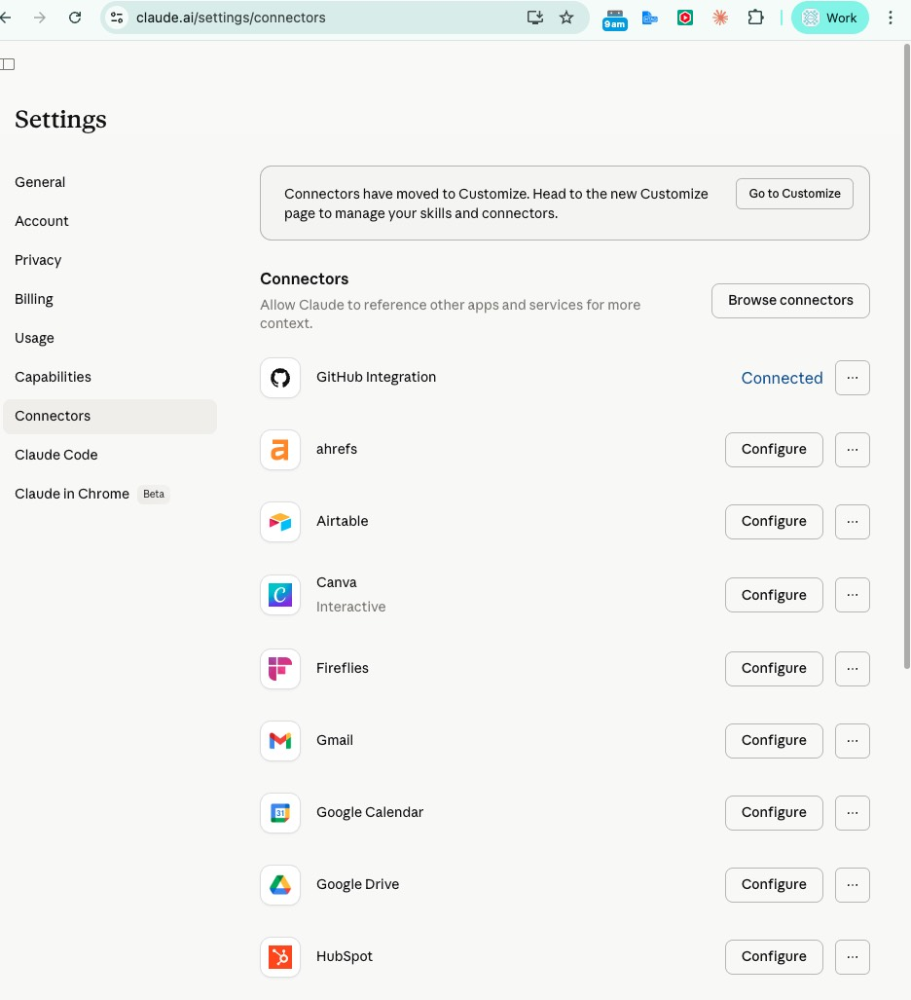

on Claude.
to the system that runs your operations.

The old job was execution. The new job is orchestration — design the system, then supervise it.
| Traditional Marketer · 2024 | Marketing Engineer · 2026 | |
|---|---|---|
| Primary job | Manually strategize and execute campaigns | Build systems, agents, and automations that run GTM autonomously |
| Content | Write the blog, manage the calendar | Ship agentic blog skills that write, schedule, and optimise — at scale |
| Data | Manually pull reports, build dashboards | Instrument pipelines; agents generate and refine the analysis |
| Tools | Master Canva, HubSpot, GA | Wire APIs, MCP, and agents — apps become endpoints |
| Collaboration | 5–10 human stakeholders per project | You + a fleet of agents. Humans review, don't execute. |
| Invents | Executes known plays | Invents capabilities that didn't exist before |
And what it isn't.
The vocabulary you half-understand.
A mental model of how agents work.
Skills & agents — built together, with real examples.
By the end you'll say "that should be a hook, not a rule" — and your team will know what you mean.
A beginner course.
An engineering class.
A tool tour.
A sales pitch.
You won't write code. You will learn to design workflows — the thinking, not the syntax.
| n8n workflows · deterministic | Skills & Agents · agentic | |
|---|---|---|
| How it works | Follows the same steps every time | Looks, thinks, decides, adjusts |
| Where it wins | High-volume, repeatable, auditable work — 100% consistency per step. A 10-step chain of 95%-accurate agents = only ~60% end-to-end. | Judgment-heavy, messy, novel-input work. |
| Adapts | Rigid — reshaping the flow means rebuilding it. | Bends with you — today's one-off becomes tomorrow's reusable skill. |
| Risks | Technical to build — wiring nodes takes real setup; brittle when inputs drift. | Non-deterministic — same prompt, different answer. The craft is keeping it consistent and correct. |
| Sales use case | New meeting booked in HubSpot → auto-add to nurture sequence → notify the AE in Slack | "Read this prospect's last 6 months of emails and 3 calls, draft a pre-call brief with their likely objections" |
Same brain — different harnesses.
| Claude.ai | Cowork | Claude Code | |
|---|---|---|---|
| Metaphor | Smart colleague on chat | Delegated assistant in a sandbox | Your team's operating system |
| Where it works | On Anthropic's servers | On your computer, in a sandbox | On your computer · full access |
| Interface | Browser / desktop app | Inside the desktop app | Terminal / IDE / Desktop app |
| Strengths | Think, write, analyze, use skills & MCP | Long-running tasks, browses, files, scheduled | Code, tools, hooks, agents, team skills |
| Best for | Quick turns, one-off thinking | Daily knowledge work · 80% | Reusable systems teams share |
| Cowork Connectors | Claude Code · MCP | Plugins* | |
|---|---|---|---|
| What it is | Prebuilt integrations | Open protocol for tools | Installable bundle of capabilities |
| What it unlocks | Gmail, Drive, Notion, Calendar | Any tool with an API | Skills, commands, agents, hooks, MCP servers |
| Who builds it | Anthropic | You, your team, or the community | Anthropic marketplace / GitHub / your team* |
| Best for | Personal apps, out of the box | Internal systems, custom tools | Sharing a working setup with the team* |
Plugins = how you package and share.



---
name: blog-production
description: Use when writing blog content — runs the 7-phase production workflow.
---
## Steps
1. Research · 2. Outline · 3. Draft · …
claude → ✓ skills/affiliate-report.md
claude → ✓ commands/affiliate-report.md
| Trait | Good | Bad |
|---|---|---|
| 01 · Sharp description | "Use when writing a monthly affiliate performance report — runs pull → analysis → deck." | "Affiliate tool." ← Claude never finds it. |
| 02 · One job | One skill = one procedure. Splits naturally by verb. | "Do-everything marketing skill." ← nothing triggers cleanly. |
| 03 · Names its inputs | "Requires: GA4 property ID, month, affiliate list." | Assumes context. ← fails silently on Day 2. |
| 04 · Short body, linked references | Steps + a link to references/report-template.md. Loads the ref only if needed. | 2,000 lines pasted in the skill body. ← bloats every load. |
| 05 · Testable output | "Output: a Google Sheet with columns X / Y / Z + a summary block." | "Gives you insights." ← you can't tell if it's wrong. |
---
name: marketing-data-analyst
description: Investigates traffic drops, diagnoses ranking shifts, writes data-driven briefs.
tools: [ga4, gsc, ahrefs, sheets]
---
You are a senior marketing analyst. Your job is to …
→ Write first-person as Tina Chu
→ Pass the 10-criteria eval before delivery
→ Load their voice, positioning, audience
→ Turn briefs into blog / landing / comparison pages
| Skill | Agent | |
|---|---|---|
| Mental model | A recipe card | A specialist chef |
| Scope | One repeatable procedure | A role with judgment + tools |
| Context cost | Just the description (cheap) | Runs on its own whiteboard (free to your context) |
| Invocation | Auto-loads when description matches, or /name | Delegated by role — "have the analyst…" |
| Best for | Same steps, different inputs | Novel work · heavy research · cross-file synthesis |
| Example | "Audit this site with /aeo-audit" | "Why did organic traffic drop 15% last week?" |
A live Google Sheet. Ready to share.
A live Google Sheet. Ready to share.
Dead end.
A formatted report. Actionable.
A written plan. You execute.
A production plan. Assets in hand.
Persistently.
~/.claude/ ├── CLAUDE.md ← constitution · 90 lines ├── settings.json ← permissions, hooks ├── hooks/ ← auto-runs on events │ ├── memory-extract.sh ← save learnings │ ├── pre-commit.sh │ └── session-start.sh ├── agents/ ← 2 global agents ├── commands/ ← 60+ slash commands └── skills/ ← 70+ skills ~/novastacks/.claude/ └── agents/ ← 15 project specialists ├── linkedin-writer.md ├── chief-of-staff.md ├── marketing-data-analyst.md ├── content-writer.md └── …11 more
Think of it as Claude's working memory for this conversation.
| Mechanism | Whiteboard role |
|---|---|
| CLAUDE.md | Written in permanent marker at the top of every new whiteboard. Keep it short — costs space every turn. |
| MEMORY.md | A sticky note auto-taped to every whiteboard in this project. Small on purpose. |
| PROGRESS.md | A notebook on your desk. Not on the whiteboard — survives every wipe. |
| Skills | Files in a filing cabinet. Only pulled onto the whiteboard when Claude decides one matches the task. |
| Agents (subagents) | Assistants with their own whiteboards. They work separately, hand you a summary — saving your whiteboard space. |
| Hooks | Stamps on the wall outside the whiteboard. Zero space cost. Fire automatically on events. |
| /compact | Erase the middle of the whiteboard, replace with a summary line. Saves space — loses detail. |
| /clear | Full whiteboard wipe. Fresh start. |
| Symptom | What's happening |
|---|---|
| Claude forgets an instruction you gave 20 turns ago | Earlier content still in window — but attention is diluted |
| Output is shorter, more generic, less specific | Context rot · accuracy degrading |
| Agents produce inconsistent results across runs | Each invocation sees slightly different starting context |
| Plan steps get dropped mid-task | Long turn counts push old instructions out of focus |
| Claude re-asks for info you already provided | Recall failing despite info being "in context" |
| Inconsistent voice/tone in content work | Earlier brand rules no longer weighted properly |
| Lever | When to pull it | What happens |
|---|---|---|
| Persist plan to PROGRESS.md | Plan-mode approved, or any multi-step agreement | Plan lives on disk, survives compaction & new sessions. Format: Goal / Steps / Status / Next. |
| Save learning to MEMORY.md | "remember this" · after a correction or pattern | Appended to project MEMORY.md (200-line cap). Auto-loads every future session. |
| Run /compact | Status-line drops below 50%, or output feels thin | Earlier turns summarized by the server → space freed, detail lost. Save critical state first. |
| Run /clear | Switching between unrelated projects | Full whiteboard wipe. Fresh session — cleaner than mixing contexts. |
Then we rebuilt it.
1 agent · 1,791 lines · 1 context window
Orchestrator · 238 lines · delegates everything
Isolated specialist.
Fresh context window. Specific tools. The collect agent never sees the report agent's conversation. Each gets a clean whiteboard.
Harness-level enforcement.
Your system runs it, not Claude. A tripwire. PreToolUse blocks writes to .env. PostToolUse re-verifies every edit. Stop extracts lessons.
Deterministic validation.
Python, not prompts. "Report says 27,659 keywords. Raw file says 15,164. Don't match → exit 1 → retry." The model cannot explain away an exit code.
| Piece | Role | One-liner |
|---|---|---|
Claude Code primitives | ||
| CLAUDE.md | The Constitution | What Claude must always do, without exception. |
| Skills | The Procedures | How to execute. Step-by-step. Loaded on demand. |
| Commands | The Shortcuts | One-liners that trigger entire workflows. |
| Agents | The Specialists | Dedicated team members with their own role and tools. |
| Hooks | The Guarantees | Enforcement that absolutely cannot be skipped. |
Patterns Tina layered on top | ||
| MEMORY.md | The Learnings | What was discovered. Mistakes caught. Decisions made. |
| PROGRESS.md | The State | Where we are. What's done, next, blocked. |
| Rules | The Guardrails | Standards loaded into CLAUDE.md only when relevant. |
You've heard the concepts.
Now watch the build.
performance data.
web research.
Flag issues.
Save to file.
skill + command.
same shape.
Fetch
APIs, DBs, sheets.
Enrich
Add context. Cross-reference.
Analyze
Trends. Judgment. Scoring.
Format
Clean output. Savable.
Wrap
One command.
| Team | Fetch | Enrich | Analyze | Format | Wrap |
|---|---|---|---|---|---|
| Sales | Partner data | Meeting notes | Booking trends | Call prep brief | /call-prep Marriott |
| Content | Keyword rankings | Competitor content | Gap analysis | Content calendar | /content-plan Q3 |
| Marketing | Campaign perf | CRM data | ROI by channel | Weekly brief | /weekly-brief |
workflow you'd
automate?
No surprises.
| Permissions | What Claude can't do. Hard block. |
| Hooks | What the system enforces. Tripwire. |
| Instructions | What Claude should do. CLAUDE.md + skills. |
Notion.
| git pull | Hit refresh in Google Docs. |
| git status | See what's changed since last save. |
| git commit | "Save version" with a note. |
| git push | Share. Publish. |
| git log | The version history. Who changed what, when. |
Five takeaways.
checklist.
Full deep-dive.
Every section expanded, HTML.
Build your first production skill.
Template + checklist.
Git for non-engineers.
The 5-command guide.
AI impact report.
One-pager for your VP conversation.
Agentic tools landscape.
What else is out there.
tina@novastacks.ai
yaohong@superuserhq.com · Slack #claude-code
Bigger operating system.